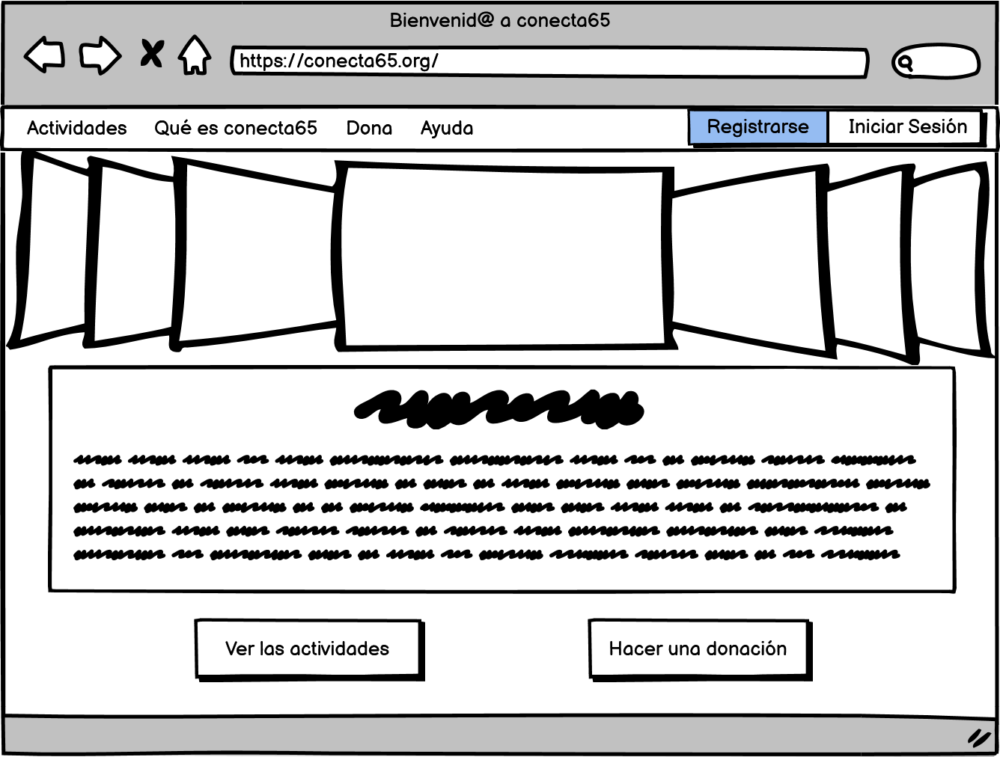
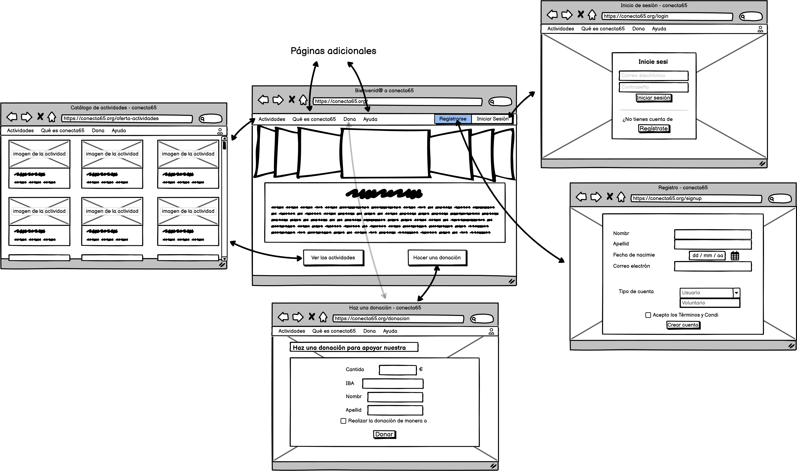
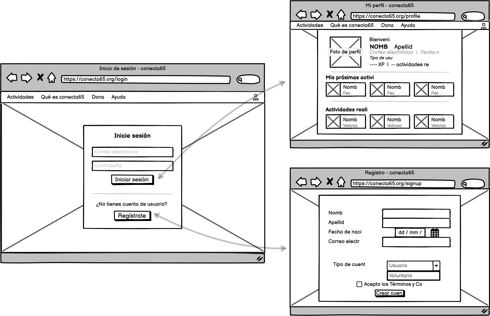
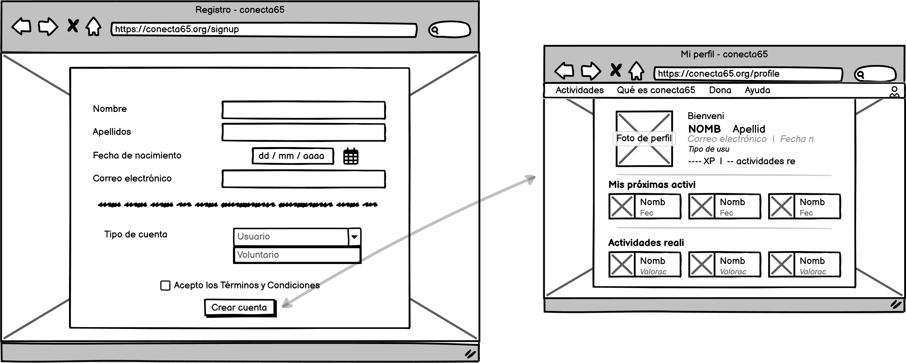
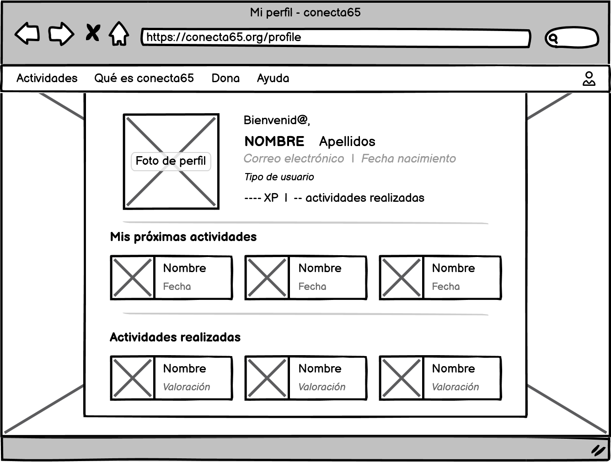
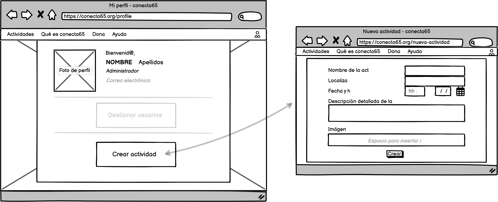
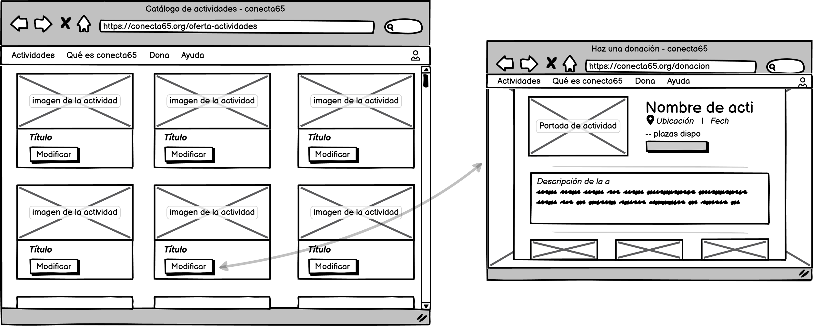
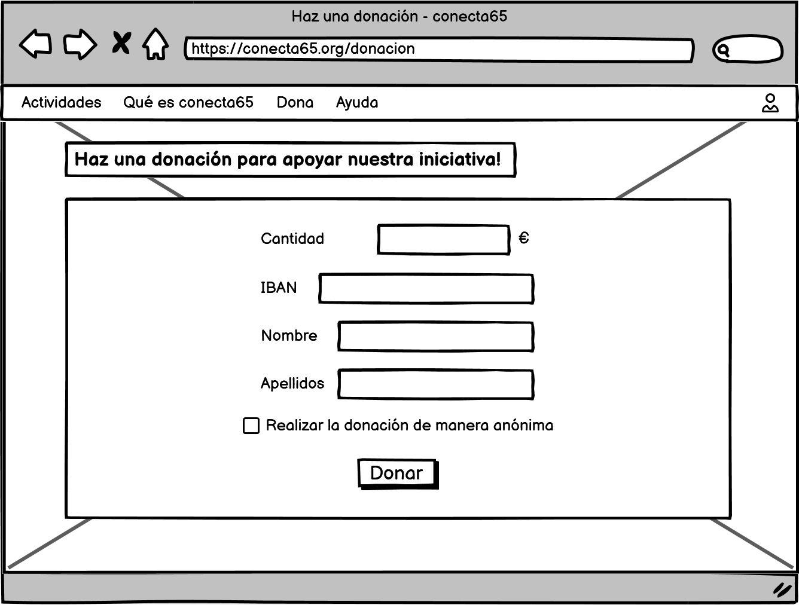
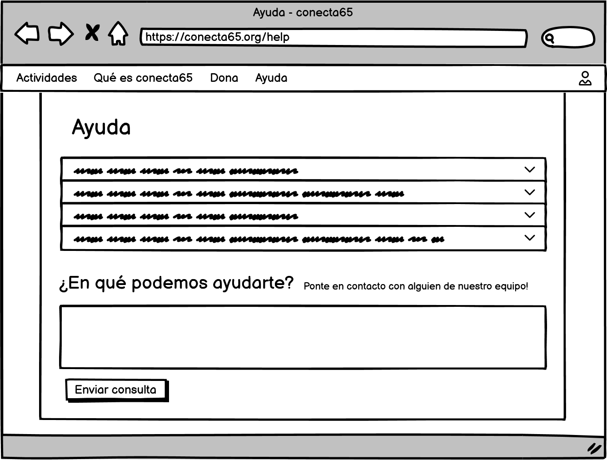
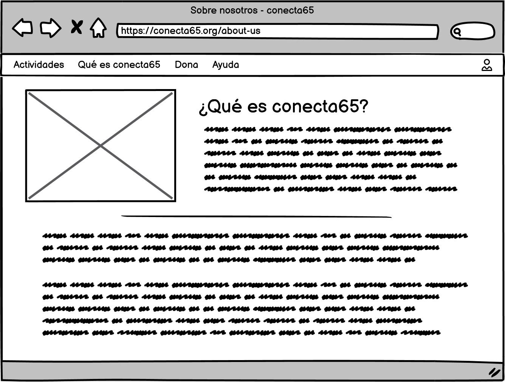

- Inicio
- Registro de usuarios
- Perfil de usuario
- Funcionalidades de las actividades
- Realizar una donación
- Páginas adicionales
Página de inicio
 Funcionalidad y flujo de navegación
La apariencia de esta primera página es bastante sencilla, pero sin dejar de lado componentes que la hagan atractiva para el usuario que entre en la aplicación. Así, se compone de una barra de menú con opciones que dirigen al usuario a las funcionalidades principales, una sección con un cover flow con imágenes de actividades y otros temas de interés de la aplicación, otra de texto en la que se pueden mostrar distintos mensajes que se consideren de especial importancia y dos botones que de nuevo dirigen a las dos funcionalidades principales de la aplicación.
En la barra de menú encontramos:
- Un apartado que dirige al usuario a la vista de actividades
- Uno que le dirige a la página de donaciones
- Otros posibles que dirijan al usuario a funcionalidades adicionales (página de ayuda y sobre nosotros)
- Un botón para acceder a la página de registro de usuarios
- Otro botón a la página de inicio de sesión
Página de inicio de sesión
Detalles de la página y navegación
Para poder acceder a todas las funcionalidades de la página, el usuario deberá iniciar sesión en la aplicación. Para ello tendrá que hacer click en el botón habilitado para ello en la página de inicio e ingresar con su correo electrónico y contraseña.
Si el ingreso es exitoso, el usuario será dirigido a la página de perfil para ver sus datos y podrá reservar plaza en actividades en el caso de que se trate de un usuario regular u ofrecerse a dirigirlas si se trata de un voluntario.
Para el caso de que se llegue a esta página sin tener una cuenta creada en la aplicación, se dispone de un botón que redirige al usuario a la página de registro.
Registro de usuarios
Funcionalidad y flujo de navegación
Esta página está dedicada a los usuarios de la aplicación que no tengan creada una cuenta. Está compuesta de espacios para introducir todos los datos necesarios para crear un perfil nuevo en la aplicación. Para ello, deberá contar con una implementación interna que permita mantener un control sobre los datos recogidos, asegurando que sean válidos y únicos.
Una vez se complete el registro, se llevará al usuario a la vista de su perfil, que se detalla a continuación.
Vistas de perfil
La aplicación nos dirige a la página de vista del perfil al terminar con éxito el registro de un usuario, después de iniciar sesión y al hacer click en el icono de perfil, en la esquina superior derecha en la barra de menú.
Perfil de usuario
En el caso de usuarios básicos y voluntarios, la página de perfil muestra:
- Foto de perfil
- Datos del usuario como nombre y apellidos, correo electónico, fecha de nacimiento, etc.
- Tipo de usuario
- Opcionalmente, se puede llevar una cuenta de XP, que aumente a medida que el usuario participa en actividades y según una cierta valoración.
- Número de actividades en las que se ha participado.
- Una sección en la que se muestran las próximas actividades en las que el usuario ha reservado plaza o se ha ofrecido a dirigir, en el caso de los voluntarios.
- Una segunda sección que muestre las actividades en las que se haya participado con anterioridad.
La navegación por la aplicación desde la vista del perfil del usuario se basa en los apartados de la barra de menú, permitiéndole acceder al resto de funcionalidades de esta manera.
Perfil de administrador
La página de perfil de los administradores mostrará sus datos personales y un apartado para poder crear actividades nuevas.
De manera opcional se propone la posibilidad de que los administradores lleven también la gestión de los usuarios, pero no se plantea su implementación por el momento.
Funcionalidades de las actividades

La vista de actividades cuenta con miniaturas de las actividades en oferta para los usuarios. Se accede a ella a través del botón habilitado para ello en la página de inicio o desde cualquier página en la barra de menú. En el caso del usuario básico se mostrarán las que tengan ya un voluntario que las dirija. En la de estos aparecerán las que todavía no estén dirigidas, para que se puedan ofrecer a hacerlo. En la vista de actividades para los administradores aparecerán todas las que se hayan creado, independientemente de si tienen un voluntario asignado o no, y tendrán la opción de modificarlas.
Gestionar actividades
Los administradores tienen acceso a un panel de control donde pueden crear, modificar y eliminar actividades. Son los encargados de proponer las actividades y publicarlas en la plataforma, donde posteriormente los voluntarios y usuarios que estén interesados, podrán inscribirse.
Crear actividades
El botón de Crear actividad en la página de perfil de los administradores los enlaza a esta vista. En ella, tendrán espacios para introducir todos los datos necesarios para la nueva actividad, como nombre, fecha y hora, localización, aforo, etc. Al hacer click en el botón de crear se redirigirá al administrador a la vista de todas las actividades.

Modificar actividades
Cuando un administrador accede a la vista de actividades, tiene la opción de modificarlas, cambiando sus datos, o eliminarlas.
Reserva de actividades
Se accede a esta vista estando autenticado como usuario básico al hacer click en una actividad concreta en la vista de actividades. En ella se muestran datos de la actividad como:
- Foto de portada de la actividad
- Datos de la misma como nombre, ubicación, fecha y hora, voluntario que la dirige, etc.
- Botón para reservar una plaza, en caso de que queden disponibles
- Descripción detallada de en qué consiste
- Imágenes relacionadas con la actividad
Dirigir actividad
La vista de actividad para los voluntarios mostrará los mismos datos que la de los usuarios, con la diferencia de que no podrá tener plazas reservadas hasta que un voluntario se haya ofrecido a dirigirla y que el botón servirá para que el usuario voluntario se ofrezca a dirigirla si lo desea.
Realizar una donación
Detalles de la página
Una funcionalidad adicional de la aplicación es que se puedan hacer donaciones para apoyar la labor que realizamos. A la página que cubre esta funcionalidad se accede desde el botón habilitado para ello en la página de inicio o desde cualquier página en la barra de menú, y tendrá espacios para introducir:
- La cantidad que se desea donar
- El IBAN de la cuenta bancaria desde donde se quiere realizar la donación
- Nombre y apellidos del donante
- Marcar o no la opción de realizar la donación de manera anónima
Páginas adicionales
Pese a no estar listadas como funcionalidades de la aplicación, tener las siguientes páginas siempre resulta interesante para los usuarios.
Ayuda
Página que ofrece respuestas a FAQs, indicaciones de cómo usar la aplicación y un apartado para solicitar ayuda específica.
Sobre nosotros
Página con información sobre la aplicación, el equipo y otros datos de interés.
